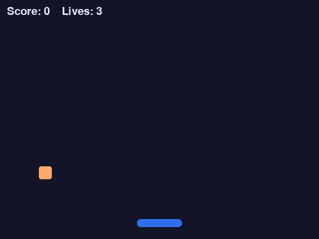

لعبة حقيقية بنافذة وحركة وصوت لوحة مفاتيح — لا نصّاً في الطرفية. ثم نجيب عن السؤال الذي يأتي بعدها مباشرة: أيّ محرّك ألعاب أتعلّم، وهل يتحمّله جهازي؟
pygame مكتبة بايثون لصناعة الألعاب ثنائية الأبعاد. تفتح نافذة، وترسم فيها أشكالاً وصوراً، وتقرأ لوحة المفاتيح والفأرة. هي أسرع طريق من «أعرف بايثون» إلى «صنعتُ لعبة».
في طرفية VS Code اكتب:
كل لعبة في العالم — من تتريس إلى أضخم الألعاب — تكرّر أربع خطوات ستّين مرة في الثانية. هذا كل شيء:
لاحظ الخطوة الرابعة: أنت لا «تحرّك» المربّع على الشاشة، بل تمسح الشاشة كلّها وترسمه في مكانه الجديد. تكرار ذلك بسرعة هو ما يصنع وهم الحركة.
أنشئ ملفاً باسم catch.py، والصق هذا فيه. لعبة تلتقط المربّعات الساقطة
بالسهمين ← و →، ولك ثلاث محاولات:
import random
import pygame
# --- التهيئة ---
pygame.init()
WIDTH, HEIGHT = 640, 480
screen = pygame.display.set_mode((WIDTH, HEIGHT))
pygame.display.set_caption("Catch the Falling Blocks")
clock = pygame.time.Clock()
font = pygame.font.SysFont(None, 32)
# --- الألوان ---
BG = (18, 20, 40)
PLAYER_COLOR = (47, 111, 237)
BLOCK_COLOR = (255, 171, 112)
TEXT_COLOR = (230, 235, 255)
# --- سلّة اللاعب ---
player = pygame.Rect(WIDTH // 2 - 45, HEIGHT - 40, 90, 16)
PLAYER_SPEED = 7
# --- المربّع الساقط ---
block = pygame.Rect(random.randint(0, WIDTH - 26), -26, 26, 26)
block_speed = 4
score = 0
lives = 3
running = True
while running:
# 1) الأحداث — هل أغلق اللاعب النافذة؟
for event in pygame.event.get():
if event.type == pygame.QUIT:
running = False
# 2) المدخلات — أي سهم مضغوط الآن؟
keys = pygame.key.get_pressed()
if keys[pygame.K_LEFT]:
player.x -= PLAYER_SPEED
if keys[pygame.K_RIGHT]:
player.x += PLAYER_SPEED
# أبقِ السلّة داخل الشاشة
player.x = max(0, min(player.x, WIDTH - player.width))
# 3) التحديث — أنزل المربّع
block.y += block_speed
# التقطه؟
if player.colliderect(block):
score += 1
block_speed += 0.2 # أسرع قليلاً في كل مرة
block.y = -26
block.x = random.randint(0, WIDTH - block.width)
# فاته؟
elif block.top > HEIGHT:
lives -= 1
block.y = -26
block.x = random.randint(0, WIDTH - block.width)
if lives <= 0:
running = False
# 4) الرسم — الخلفية أولاً ثم كل شيء فوقها
screen.fill(BG)
pygame.draw.rect(screen, PLAYER_COLOR, player, border_radius=6)
pygame.draw.rect(screen, BLOCK_COLOR, block, border_radius=4)
hud = font.render(f"Score: {score} Lives: {lives}", True, TEXT_COLOR)
screen.blit(hud, (14, 12))
pygame.display.flip() # اعرض الإطار المكتمل
clock.tick(60) # 60 إطاراً في الثانية
# --- انتهت اللعبة ---
screen.fill(BG)
over = font.render(f"Game over! Final score: {score}", True, TEXT_COLOR)
screen.blit(over, (WIDTH // 2 - over.get_width() // 2, HEIGHT // 2 - 16))
pygame.display.flip()
pygame.time.wait(2500)
pygame.quit()شغّلها بالنقر بالزر الأيمن ← Run Python File in Terminal. ستحصل على هذا:

لقطة حقيقية من الكود أعلاه وهو يعمل
أفضل طريقة للفهم أن تكسر شيئاً وتصلحه. جرّب:
PLAYER_SPEED = 7 → اجعله 15 وشاهد الفرق.clock.tick(60) → اجعله 20، ستفهم فوراً معنى «معدّل الإطارات».screen.fill(BG) — سترى لماذا نمسح الشاشة كل إطار.
Unity و Unreal لا يُبرمَجان ببايثون. كثيرون يكتشفون هذا متأخّرين.
Unity يستخدم C#، و Unreal يستخدم C++ أو نظام العُقد المرئي Blueprints.
بايثون في Unreal موجودة لكن لأتمتة المحرّر لا لبرمجة اللعبة.
هذا لا يعني أن وقتك مع بايثون ضاع — بالعكس. المفاهيم التي أتقنتها (المتغيّرات، الشروط، الحلقات،
الدوال، الأصناف) هي نفسها في كل لغة. تعلّم C# بعد بايثون يستغرق أسابيع لا سنوات،
لأنك تتعلّم تركيباً جديداً لا تفكيراً جديداً.
| الأداة | اللغة | لماذا | على جهازك |
|---|---|---|---|
| pygame | Python |
مكتبة لا محرّك: تكتب كل شيء بيدك. مثالية للفهم العميق ولألعاب 2D الصغيرة. | يطير |
| Godot 4 | GDScript |
محرّك كامل ومجاني وخفيف. لغته GDScript شبيهة ببايثون إلى حدّ مذهل — إزاحة بالمسافات وكل شيء. | يطير |
| Unity | C# |
الأكثر استخداماً بين المستقلّين. مكتبة أصول ضخمة وشروحات لا تنتهي. ينشر لكل المنصّات. | مريح |
| Unreal 5 | C++ / Blueprints |
أقوى رسومات في السوق. يُستخدم في الألعاب الضخمة. منحنى تعلّم حادّ وتثبيت بعشرات الغيغابايتات. | ثقيل |
| Ren'Py | Python |
لألعاب القصص والروايات المصوّرة. مبنيّ على بايثون فعلياً، فتستخدم ما تعرفه مباشرة. | يطير |
ميزتا Unreal 5 الكبيرتان — Nanite للتفاصيل الهندسية وLumen للإضاءة اللحظية — مصمّمتان لكروت بذاكرة 8 غيغابايت فأكثر. مع 4 غيغابايت سيعمل المحرّر لكن ببطء، وستقضي وقتك في انتظار التصريف بدل صناعة اللعبة. يمكنك تشغيله وتعطيل هاتين الميزتين، لكن حينها تكون تخلّيت عن سبب اختيارك له أصلاً.
أنهِ اللعبة أعلاه، ثم أضف إليها: مؤثّرات صوتية، شاشة بداية، أفضل نتيجة تُحفظ في ملف.
Python — تعرفها بالفعلأقرب محرّك حقيقي إلى بايثون. تنزيل ~100 ميغابايت ويفتح في ثوانٍ. أفضل انتقال ممكن من موقعك الآن.
GDScript — يشبه بايثون جداًحين تريد فرص عمل أو أصولاً جاهزة أو نشراً للهواتف. تعلّم C# أولاً.
جزء من منصّة إتقان بايثون — عد إلى الدروس